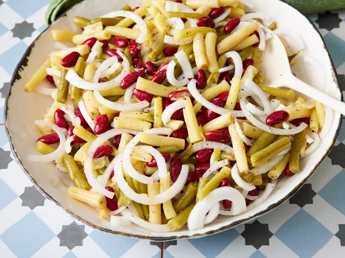

Description:
This tasty three bean salad is great for buffets, summer picnics, and cookouts. It's easy to make but tastes best when chilled for at least 12 hours. It keeps well and serves a lot of people.
Ingredients:
- 1 (15 ounce) can green beans
- 1 pound wax beans
- 1 (15 ounce) can kidney beans, drained and rinsed
- 1 onion, sliced into thin rings
- ¾ cup white sugar, or to taste
- ⅔ cup distilled white vinegar
- ⅓ cup vegetable oil
- ½ teaspoon salt
- ½ teaspoon ground black pepper
- ½ teaspoon celery seed
Steps:
- Gather all ingredients.
- Mix together green beans, wax beans, kidney beans, onion, sugar, vinegar, vegetable oil, salt, pepper, and celery seed.
- Chill in refrigerator for at least 12 hours.
- Enjoy!